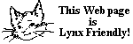

О WWW-сервере FreeBSD
Серверное оборудование

Разумеется, все системы в кластере FreeBSD.org работают под управлением FreeBSD. Оборудование и сетевое подключение были любезно предоставлены:
-
Лаборатория облачных технологий и SDN компании BroadBand Tower, Inc
-
Кафедра компьютерных наук, Национальный университет Ян Мин Цзяо Тун
— и другие участники проекта FreeBSD.
Список машин общего доступа в домене FreeBSD.org доступен на странице Сеть FreeBSD.org.
Программное обеспечение
Эти страницы обслуживаются быстрым и гибким веб-сервером NGINX и HTTP-кэшем Varnish. Кроме того, используются несколько локально разработанных CGI-скриптов.
Страницы

Изначальные веб-страницы были созданы Джоном Фибером <jfieber@FreeBSD.org> при участии сообщества FreeBSD и вас. Вольфрам Шнайдер был нашим первым веб-мастером, но теперь эта ответственность разделена между более крупной командой разработчиков веб-сайта и документации.
См. также Проект документации FreeBSD
Дизайн страниц
Текущий дизайн веб-сайта был выполнен Эмили Бойд в рамках программы Google Summer of Code в 2005 году.
Оригинальный дизайн страниц был разработан Меган Маккормак.
Обновление веб-страниц FreeBSD
Веб-страницы FreeBSD на www.FreeBSD.org в настоящее время перестраиваются по следующему расписанию:
| Время сборки (UTC) | Тип сборки |
|---|---|
Каждые 10 минут |
Если есть изменения в репозитории документации |
Документ «Руководство для новых участников проекта документации FreeBSD» описывает, как собрать документацию FreeBSD из Git-репозитория.
Последнее изменение: 10 августа 2026 г. от Vladlen Popolitov